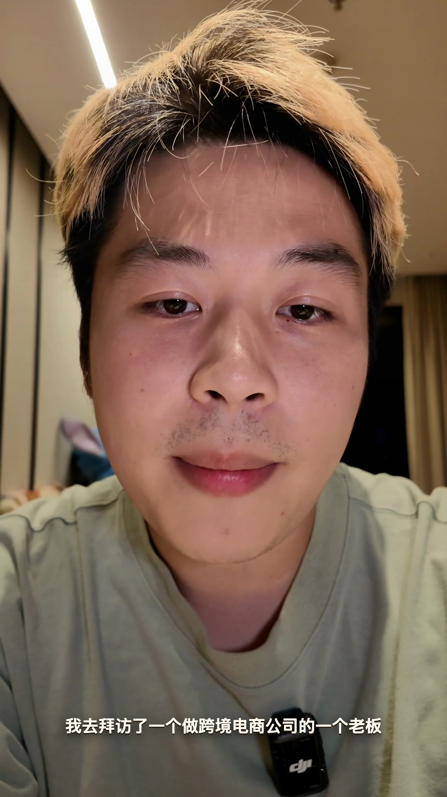
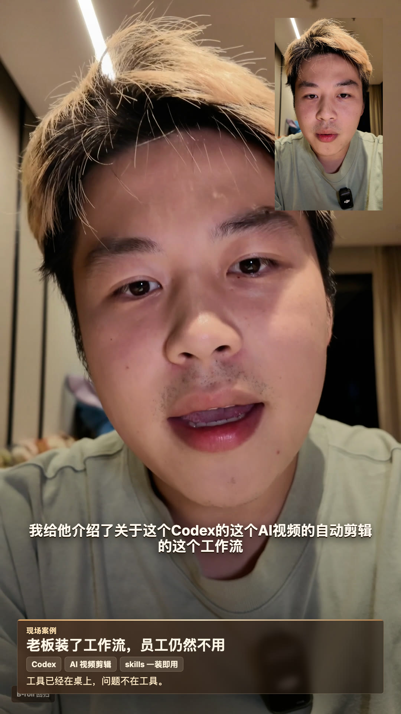
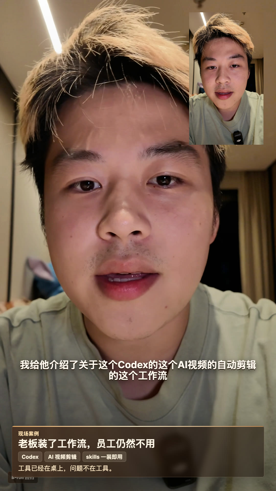
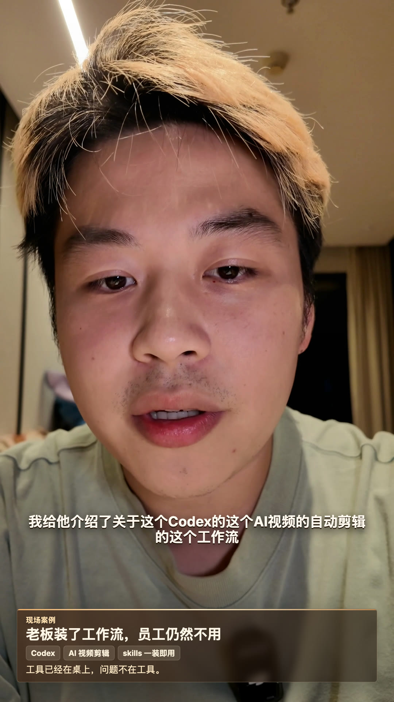

开场判断
AI 不会平均提效
它放大的不是努力，是人的底层能力差。
绝对不可能现场案例
老板装了工作流，员工仍然不用
CodexAI 视频剪辑skills 一装即用
工具已经在桌上，问题不在工具。
NOT THE ANSWER
TOP CARD
我的制作链路
Claude + Codex 已经能做成片
没开剪映特效自动生成口播包装字幕节奏
所以我说它能用，但不是谁都能用好。
不是个例
这不是个例
01
从公司 AI 转型开始，苗头就已经出现。
REAL WORK, ON THE GROUND
Proof before promises
Four real frames from this regression source, frozen locally.




核心比喻
100 分乘 100，1 分也乘 100
强员工100 × 100速度变快边界变大更愿意独立完成
VS
弱员工1 × 100仍然要解释仍然要返工差距被放大
组织后果
强者不想再跟弱者协作
沟通成本
一把梭哈做完
不是态度问题，是时间账算不过来。
READY TO IMPORT?
Tell us what you need
SEND US A DMTHE REAL COST IS
TIME
ACTION
TRACK SOURCE
SOURCE
LOCAL SOURCE
真正卡点
效率死在交接里
01个人提效
02解释需求
03返工确认
04整体变慢
把每个人都提效，不等于组织提效。
判断标准
无人监督也能跑，才叫工作流
否则 AI 只是把手工活换了一个界面。
自己运行NEXT STEP
OPEN THE QA REPORT
行业边界
UGC 能跑，不代表商单能直出
可标准化UGC / 口播节奏字幕轻包装
VS
仍需判断DTC / TVC策略品牌商单目标
别信神话
装一个工具，不会自动长出业务结果
工具流程业务判断
AI 不是开关，它要接进公司的真实流程。
为什么不能套模板
每家公司都不一样
Agent
业务流程人员组成历史包袱目标约束同一个 Agent，到不同公司就是不同系统。
知识资产
知识在员工脑子里，就很难自动化
经验不可见判断不可复用交付不可稳定
老板要先把知识从人脑里抽出来。
Claude Code 时代
需求讲清 + Token 给够，Agent 才能跑
Fable 5上下文执行预算需求描述
真正的门槛，是你能不能把需求说清楚。
给老板的提醒
先想清楚：你要提效人，还是重做流程？
工具不是答案，工作流才是答案。
重做流程不要只装工具
关注 Scott 出海
我讲商业化 Agent，不讲玄学
懂业务、懂产品、懂技术，想听真实落地就关注。
关注评论区留言
AI 是绝对不可能帮助你的普通员工去做任何的提效的
为什么有这个感触
前几天的时候呢
我去拜访了一个做跨境电商公司的一个老板
我给他介绍了关于这个Codex的这个AI视频的自动剪辑的这个工作流
你看我现在所有的这些视频
我都完全没有打开过剪映
所有的特效也全都是这个Claude 跟 Codex 帮我去做的
我觉得已经不错了
但是呢他的员工就是不愿去用
或者是用不好
这其实不是个例啊
从今年的一月份开始
我的公司就开始在做这个AI 的全面的转型
我跟大家一样
我都觉得是AI 出来了一定会提大家的这个效率
但是我后来慢慢发现
AI 出来了之后呢
他把那些能力本来是100分的这些员工
他的能力上了杠杆
乘上了100倍
能力只有一分的这些员工
他也是乘了这个100倍
这些好的员工完全就不想跟这个差的这个员工去做交流了
因为他在去做交流的时候
他的时间损耗他还不如一把梭哈把这个东西给做出来
刚开始的时候我做的所有的这些SaaS产品啊
都是为了去给大家去做提效
但是慢慢我发现了给大家去做提效
大家的这个效率永远会被卡在人和人的交流之间
AI把所有的交流的事情全都干了
永远比把个人之间的这个个人的提效
然后再让他们捏合起来
再做沟通交流
效率要高的太多太多太多了
不是人的这个问题
而是你这个工作流
你必须要真正能达成一个完全无人监督
他就能自己运行的一个状态
他才能跑要不然永远他都是一个手工活
当然有些行业他天然的就是手工活
比如说视频剪辑
如果我只是剪辑一个UGC的一个带货视频
那没问题啊
AI视频剪没问题啊
或者是一个口播视频
那也没问题啊
而你如果是做DTC视频
那现在任何的AI工具都是不可能帮你达到
能直出DTC视频或者TVC视频的这个商单的
对吧他其实是要分行业的
所有人都在说
你装上这一个HyperFrames的skills
装上这个Remotion
然后你的自动剪辑视频就能哐哐哐出片
这实际上是完全不可能
每一家的这个业务工作流都完全不一样
对吧
你想要的东西都不一样
而且你的人员组成都不一样
有的东西呢
知识完全存在这些员工的脑子里面去
他存业务导向的
他需要人去判断
他永远会给你说
这个东西就是需要人
但是大家看看最近新出的这个 Claude Code 的 Fable 5
对吧 Fable 5
大家可以去看看
只要你能把你的需求给描述好
只要你肯花Token
肯把或者是能把你的需求能给描述清楚
到底有什么是做不到的呢
所以我想请各位的老板
其实都好好考虑一下这个事情
其实有的时候并不是说
这个AI上去了就能帮你去做提效
有很多很多东西啊
是在这些很多抖音博主说话之外
你真正去落地的时候
你才能落到的困难的难处
关注我Scott 出海
Scott大家如果真的是想听一些AI 的这个东西
一定要去做关注我
对吧大家可以看一看我的履历
你在抖音上非常难找到
这个做商业化 Agent的这个产品经理
并且懂业务
懂技术如果还想
看其他的这个东西的话
可以在我这个评论区里面留言